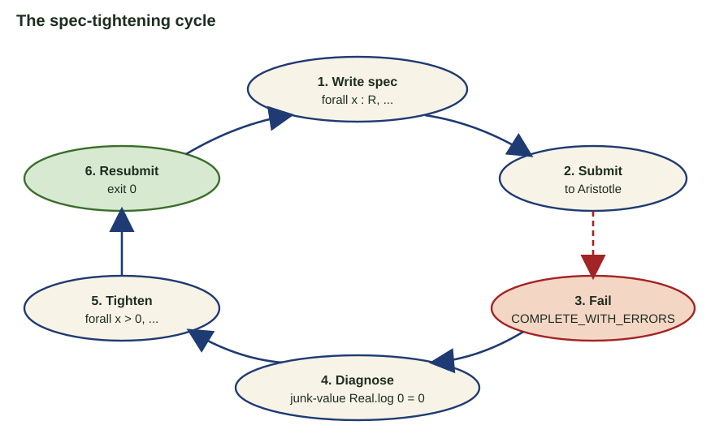

MIM UW · 22.06.2026
The
Mirages & Twists
A technical judgement of what changed—and what did not.
Bartosz Naskręcki
Adam Mickiewicz University
Centre for Credible AI, WUT
Open with the conclusion: the capability jump is real. The strongest public narrative still confuses a correct answer, a checked proof, a new theorem, and a new theory. This talk separates those achievements.
01 Answer answer(): exact scalar or SymPy object
02 Proof .lean term + kernel exit 0
03 Theorem arXiv:2604.18869: new classification
04 Theory a reusable invariant used beyond one target
The same system can succeed at 1–3 and still fail at 4.
These are separate evaluation questions. FrontierMath primarily checks a returned answer object. Lean checks a proof term against a formal statement. FirstProof asks experts whether an informal proof is publishable after minor revisions. A new theorem adds novelty; a new theory adds durable explanatory structure.
88 green full-resolution records 79 unique Erdős problems 190 unique primary problems listed
community wiki · commit 0f72fdb · audited 21.06.2026
Be exact about the denominator. The primary categories contain 237 contribution records across 190 unique problems. Eighty-eight green full-resolution records cover 79 unique problems. Selection is adaptive, literature is discovered later, and one problem can have multiple contributions. The wiki itself says this is not a benchmark.
1 GPT Pro strategy
→
2 Aristotle Lean proof
→
3 Kernel type checks
→
4 Experts ratification
Proposal ≠ verification ≠ mathematical assessment.
arXiv:2601.07421
The public record is unusually strong: exact statement, formal artifact, expert inspection, and literature context. Do not compress these different responsibilities into the adjective autonomous.
Paper phrase Chosen Lean object New obligation
“primitive prime divisor” p.Prime ∧ p ∣ Tₙ(a)−1 ∧ ∀ 0<d<n, p ∤ T_d(a)−1encode every exception exactly “same zero set” ZeroSet T = ZeroSet Strack finiteness, span, and cardinality “expressible using EML” eval? e = some v → ∃ t, t.eval? = some vmake the natural domain explicit
Formalization is not sentence translation. It is the design of definitions, domains, dependencies, and a theorem interface that a kernel can check.
Read the middle column as the real intervention. The informal noun phrase becomes a definition with quantifiers. The informal equivalence becomes literal set equality. The informal existence claim becomes a compiler-correctness interface with partial evaluation. Only after these choices does automated proof search begin. A successful proof can still certify the wrong interface, so statement alignment is a separate audit.
Primitive means: p is prime, p ∣ Tn (a)−1 , and p ∤ Td (a)−1 for every 0<d<n .
theorem Satz_2 (n : ℕ) (a : ℤ) (hn : n > 0) :
(∃ p : ℕ,
is_primitive_prime_divisor_Chebyshev a n p) ↔
¬ is_exception_Satz2 n a := by …
8 exception families a ∈{−1,0,1}; n ∈{1,2,3,4,6}; powers of 2 or 3
4,596 source lines 187 theorem/lemma declarations
0 sorry / admitsource audit at 9633e5a
What the agent proved: the encoded existence statement is equivalent to the encoded exception predicate.
Main.lean · is_exception_Satz2 → Satz_2
This is not “ask Lean whether Zsigmondy is true.” First define primitive divisibility. Then spell out eight disjunctive exceptional families. The proof separates |a|≤1, the small indices 1,2,3,4,6, and the large-n argument. The concrete audit question for a mathematician is whether this predicate matches Satz 2 in the paper, including signs, strict inequalities, and exponent ranges. The repository has no sorry or admit tokens at this commit; I am not claiming an independent cold Mathlib rebuild here.
If |X| ≤ (qn+1 −q)/(q−1) and S is finite, then there is T⊆span(S), |T|≤n, with Z(T)=Z(S).
theorem theorem_1 [Finite X] (n : ℕ)
(S : Set (X → F)) (hS : S.Finite) (hn : S.ncard > n)
(hX : Nat.card X ≤ (q^(n+1) - q) / (q - 1)) :
∃ T, T ⊆ Submodule.span F S ∧ T.Finite ∧
T.ncard ≤ n ∧ ZeroSet T = ZeroSet S := by …
4 paper results Theorem 1, sharpness, affine and projective corollaries
647 source lines 10 theorem/lemma declarations
≠ semantic warning Blueprint: “Aristotle formalized a slightly different version” of Lemma 5.
A sorry-free file can still require a paper-to-Lean equivalence audit.
Main.lean · theorem_1 · blueprint · Lemma 5 warning
The mathematical object is finite-dimensional linear compression: replace a large family of functions by at most n elements of its span without changing the common zero set. Aristotle generated the Lean development, including sharpness and affine/projective corollaries. The crucial honest detail is in the project blueprint: one auxiliary lemma is explicitly marked as a slightly different formalization. Kernel success does not settle that correspondence. This source snapshot contains no sorry or admit tokens; again, this lecture audit did not perform a clean cold build.
T ::= 1 | xₙ | eml(T,T)
eml(a,b) := exp(a) − log(b)F3636 primitives translate? EL compile EML ι EMLℂ
Correctness interface: if the source expression evaluates to some v, compilation produces an EML term evaluating to some v.
def EMLTerm.eval? : EMLTerm → Option ℝ
| .one => some 1
| .var n => some (env n)
| .eml a b =>
if 0 < eval b then
some (exp (eval a) - log (eval b))
else none36/36 primitives100 public theorems0 sorry/admit
Option semantics removes the false boundary equation created by Mathlib’s total Real.log 0 = 0.
eml-formalization · audited source d7d041d
The central move was to stop treating the paper as a catalogue of isolated identities. We defined source, intermediate, and target syntaxes; partial denotational semantics; a structural compiler; and an evaluation-preservation theorem. The Option-valued evaluator is not an implementation detail. It prevents Lean's total Real.log from manufacturing a value at zero where the mathematical term is undefined. This is what the project is really formalizing: a compiler and its domain contract.

Reproduced from the EML project presentation.
25+ Aristotle submissions 5 waves · 36 hours · about 10 concurrent slots
9 / 15 clean first pass in one wave long existential goals often returned COMPLETE_WITH_ERRORS
Not a blind retry: inspect the failure, recover the paper’s domain, replace ∀ x by ∀ x > 0, then resubmit.
original SVG · campaign report
This is the exact loop from the EML presentation. The important operation is between failure and resubmission. COMPLETE_WITH_ERRORS is evidence about the current formal goal, not a reason to send the same goal again. In the shown case, diagnosis exposed a junk-value use of Real.log 0 = 0 and a theorem stated on a domain broader than the paper. The specification was tightened from all real x to positive x. The archived report records more than 25 submissions over five waves, with an approximately six-hour rate-limit pause.
Observed defect Mathematical cause Repair in the formal object
Real.log 0 = 0 made a false boundary “work”total library function outside the natural domain Option-valued evaluator; explicit positivitysingle witnesses failed at √0, arcosh 1, hypot(0,0) boundary expression becomes undefined point-dependent witness family ∀ env, ∃ t real-part identities were presented as complex witnesses bridge theorem was weaker than the paper claim separate real grammar from literal complex witness flat catalogue looked complete but did not scale no compositional theorem connected primitives F36 → EL → EML compiler + one correctness proof
The second model’s useful output was a stronger theorem architecture, not another proof attempt.
These are the concrete reasons the initial “complete” report was retracted. The repair is visible in the type of the formal object: partial evaluation, domain hypotheses, witness families at boundary points, and a compiler theorem instead of a list. Separate-model review mattered because it challenged the scope and interfaces rather than continuing the same local proof trajectory.
RESULT complete classification product intersection sets in semigroups
ARTIFACT kernel-checked autonomously discovered and Lean-verified
RESPONSIBILITY human-owned review, exposition, publication
van Doorn · Monticone · Tang · arXiv:2604.18869
This answers Nathanson's questions rather than a single named conjecture. It is a clean example of a new mathematical result paired with a formal artifact. The authors retain responsibility for checking, exposition, and the published claim.
ECDSA.fail · 14 June · reversible secp256k1 point addition
The Q × T objective fell 84.3%.
promoted objective
1,170 × 1,434,070
= 1,677,861,900
BASELINE 2,715 × 3,942,753 = 10,704,574,395
HARNESS 9,024 trusted shots · failures 0 / 0 / 0
ecdsa.fail · nasqret · GPT-Codex · lower is better
The challenge object is a reversible implementation of secp256k1 point addition. The score is exactly peak qubits times Toffoli gates: 1,170 times 1,434,070 equals 1,677,861,900. The baseline product is 10,704,574,395, so the promoted circuit is 84.3 percent lower. The evaluator recorded 9,024 trusted shots and a failure vector of zero classical, zero phase, and zero ancilla failures. This is strong executable optimization evidence under the challenge harness. It is not a break of ECDSA and the finite test set is not a proof for every possible input.
5 pilot manual calibration
18 autonomous stateful search
28 follow-up exact Magma checks
generate candidate → exact Magma verification → live-open check → canonicalize + deduplicate → accept
5 + 18 + 28 = 51 distinct accepted pairs. Private instances withheld; this is a campaign audit, not a public leaderboard result.
The 17 June repository snapshot contains 51 distinct accepted pairs. Five came from the pilot phase used to calibrate the workflow, 18 from autonomous stateful search, and 28 from targeted follow-up with exact Magma computations. Acceptance required a candidate, exact verification, a live-open check, canonicalization, and deduplication. The method is the result I can discuss publicly. Because the instances and ongoing competition are private, these counts must not be presented as a reproducible public benchmark score.
With Piotr Pokora · VENIANI-64 · exact characteristic 0
24 lines. 32 triple points.14/5 > 8/3.
Fp search → Q̄ reconstruction → Magma: nonsingular → Sage + Magma replay
Search objective: G = 10n − 2t₂ − t₃ = 208.
github.com/nasqret/pokora-optim · exact certificates, not a model score
The exact quartic X is defined over the rationals and the relevant 24-line configuration is reconstructed in characteristic zero. Its incidence profile has no double points, 32 triple points, and no quadruple points. Substitution into the logarithmic Chern formulas gives c-bar-one-squared equal to minus two times 24 plus five times 32, hence 112; c-bar-two equals 24 minus two times 24 plus two times 32, hence 40. The slope is therefore 112 over 40, or 14/5, strictly above 8/3. The search used G = 10n - 2t2 - t3 = 208. The project package carries the exact line-incidence evidence; the lecture's Magma replay checks nonsingularity over Q and the Chern arithmetic, while Sage independently replays the numerical certificate. The model label is provenance; the evidence is the exact certificate chain.
DISCOVERY Gröbner bases exact reconstruction · 800 conics · machine-audited cases
→
EXPOSITION structural lemmas compressed argument · independent reading · no computer dependency
github.com/nasqret/quadrics
This dissolves the false dichotomy between computer proof and human proof. Tool-heavy discovery can be scaffolding for a conceptually cleaner final argument.
INPUT 10 unpublished research questions, copied from the LaTeX source without modification
SYSTEM Aletheia A and B, using two different Gemini base-model snapshots
INTERACTION no clarification, repair, or intermediate human intervention
OUTPUT predetermined verifier/extractor → standalone LaTeX proof or no output
GRADING at least 2 academic mathematicians; more opinions when confidence was low
“CORRECT” publishable after minor revisions—not publication-ready as generated
Feng et al. · arXiv:2602.21201 · §§2–3
This is not a zero-context model benchmark. It is a fully autonomous agent pipeline with a predetermined verifier and extractor, run twice with different base models. The problem statements were copied unchanged. The researchers did not ask the model for clarification after seeing outputs. Their success standard is explicitly “publishable after minor revisions.” FirstProof itself was not intended as a formal benchmark.
Problem Aletheia A Aletheia B Best-of-two expert result
P1 no output no output — P2 correct correct 4/4 P3 no output no output — P4 no output no output — P5 correct misinterpreted 4/4 P6 no output no output — P7 critically flawed correct 3/3 P8 inadequate correct? 5/7 P9 correct correct 4/4 P10 correct correct 2/2
Table 2 · raw prompts and outputs: google-deepmind/superhuman/aletheia
Both agents solved P2, P9, and P10. The other three credited problems depended on selecting between asymmetric outcomes: P5 correct versus misinterpreted, P7 critically flawed versus correct, and P8 inadequate versus a disputed correct result. Each agent had at least one false positive. Four problems self-filtered to no output in both runs.
P7 · ALETHEIA A · CRITICALLY FLAWED
σ acts freely, σ²=1⇏ 2 ∣ χc (M; ℚ)
The argument invoked multiplicativity of compactly supported Euler characteristic without the required finiteness assumptions.
Aletheia B was accepted 3/3. P7 used >10× the Erdős-1051 inference-cost baseline.
P8 · ALETHEIA B · 5/7
local vertex smoothings? global edge smoothing
Reviewers agreed on the mathematical direction but disagreed whether missing interpolation details were “minor revisions.”
Aletheia A was rated inadequate; the disagreement was about proof completeness.
Feng et al. · §3.2
These are not vague hallucination labels. P7 contains a recognizable false implication: freeness of an involution does not by itself justify the divisibility claim for compactly supported rational Euler characteristic without finiteness. P8 is subtler: the experts mostly agreed on content but split on whether the local-to-global smoothing gap exceeded the “minor revision” threshold. This is why expert assessment remains part of the result.
75.6% ±6.7 pp · FrontierMath Tier-4 v2
STATE asynchronous workspace; failed hypotheses retained
TOOLS literature, computation, proof, theory exploration
HUMAN LOOP intent refinement, uncertainty management, artifact review
Agent scaffolding is part of the evaluated object.
arXiv:2605.06651 · Epoch v2 data, accessed 22.06.2026
The current v2 score is 75.6 percent with a 6.7-point standard error. The evaluated object is a stateful workbench, not merely a call to a base model. Its score belongs in the same leaderboard, but it should not be interpreted as an apples-to-apples comparison of underlying model weights.
43 Tier-4 problems 2 public · 41 private
1M hard token limit forced submission at 660k
30 s per Python call SymPy, NumPy, SciPy, NetworkX
answer()returned Python object often integer or SymPy object
v1 → v2 12 Tier-4 problems corrected 7 removed 42% of the full benchmark addressed
Epoch AI · methodology and changelog
A Tier-4 score is short-answer accuracy under a large tool-using protocol. It does not directly score a published proof. The v2 private set has 41 problems because two of the 43 are public. A model may use up to one million tokens and repeated 30-second Python calls. Version 2 corrected 12 Tier-4 problems and removed 7, so v1 and v2 percentages are different objects.
Claude Fable 5 (max) 87.8 ±5.2
GPT-5.5 Pro (xhigh) 78.0 ±6.5
AI Co-Mathematician 75.6 ±6.7
GPT-5.5 (xhigh) 72.5 ±7.1
GPT-5.4 Pro (xhigh) 58.5 ±7.8
Claude Opus 4.8 (max) 56.1 ±7.8
GPT-5.4 (xhigh) 49.0 ±8.0
GPT-5.2 Pro (xhigh) 46.0 ±7.8
Qwen3.7-Max 34.1 ±7.5
Claude 4.7 / GPT-5.2 31.7 ±≈7.3
Epoch benchmarks.csv · top ranks among 31 v2.0.0 evaluation rows · percentage ± standard error
This is a frozen snapshot of the official Epoch data on 22 June. The chart shows the top ten score positions among 31 v2 evaluation rows. It is already radically different from the pre-audit chart: the current leader is Claude Fable 5 at 87.8 percent, followed by GPT-5.5 Pro and AI Co-Mathematician. The error bars are wide because the private set contains 41 problems.
2.44 pp one private problem 1 / 41 × 100
5–8 pp typical standard error many intervals overlap
heterogeneous evaluated systems base models, “xhigh,” agents, unreleased systems
not normalized inference compute score alone does not isolate architecture or model quality
Use the chart as a protocol result, not a scalar theory of mathematical ability.
One additional solved problem moves the score by about 2.44 percentage points. Standard errors overlap across several neighboring systems. The configurations differ in test-time compute, accessibility, base model, and agent scaffolding. This chart is valuable, but it does not identify a single causal variable called mathematical intelligence.
structural decomposition invariant deep geometry auxiliary objects counting formula constraint classification global cancellation
sources/summary-anonym.tex · exact problem details withheld
The problem is in arithmetic algebraic geometry and asks for an exact large integer. The official route has seven conceptual steps. Eleven runs started from scratch under identical conditions, each using roughly one hundred thousand or more reasoning tokens. The report is anonymized, contains no critical solution details, and was approved by Epoch AI for public view.
1 I1
0.5 I2
2.5 I3
3 I4
3 I5
2.5 I6
4 I7
0.5 I8
4.5 I9
0.5 I10
7 Final
mean I1–I10 = 2.2 / 7
code heuristic zero answer correct
source: summary-anonym.tex · 1/11 correct
The scoring is based on the seven official conceptual steps: one point for full discovery and half a point for partial discovery. The first ten runs averaged 2.2. The strongest wrong run reached 4.5. Only the final run assembled all seven steps and returned the correct integer, via executable code rather than a complete analytic derivation.
Step Role full partial missed
S1 structural decomposition 5 6 0 S2 invariant computation 7 4 0 S3 deep geometric structure 1 7 3 S4 associated objects 2 5 4 S5 counting formula 1 5 5 S6 constraint classification 3 4 4 S7 global cancellation 1 1 9
All runs engaged S1–S2. Nine of eleven never found S7.
The model consistently found the common preamble: decomposition and the key invariant. From S3 onward, coverage drops. S7 is qualitatively different: recognizing a global symmetry that collapses the final calculation. Only the correct run found it fully; one other run saw it partially.
3.4 / 7 mean for code-submitting runs versus 0.6 / 7 without code · 5.7×
+6.4–6.8% error of all three heuristic guesses every guess overestimated: shared systematic bias
3.6 / 7 deep use of 2–3 strategies versus 0.5 / 7 for shallow exploration
“best guess” language used by the correct run confidence did not discriminate correct from incorrect
descriptive correlations from summary-anonym.tex; not causal estimates
Writing code correlates strongly with higher step coverage, likely because it forces explicit implementation. The three heuristic estimates independently converged to the same six-to-seven percent overestimate. Depth across a few compatible strategies outperformed shallow breadth. Most importantly, the correct run remained uncertain and called its output a best guess; self-reported confidence was not useful for identifying success.
Observed output: repositories, tests, mathematical code, documentation, slides, and interactive applets.
This is production evidence, not a randomized learning-outcomes study. The observable result is that participants and instructor produced working repositories, documentation, tests, mathematical code, slides, and interactive applets.
Case Observed failure Missing control
Lean a valid term can prove the wrong formal statement semantic alignment EML Real.log 0 = 0 and boundary witnesses survived the first passpartial semantics + independent audit FirstProof P7 plausible multiplicativity argument lacked finiteness hypotheses hypothesis control Tier-4 case 9/11 runs missed the global cancellation representation and global symmetry
The bottleneck is not generating local moves. It is selecting and controlling the global structure.
This is the critical claim, now tied to four concrete observations. Formal verification moves the boundary to statement alignment. EML required a second, isolated audit. The FirstProof P7 flaw is a missing hypothesis at a familiar theorem interface. The private Tier-4 traces repeatedly missed the global cancellation. Better latent representations or world models may eventually help, but that is a future hypothesis, not current evidence.
STATEMENT versioned claim, assumptions, and scope PROVENANCE models, tools, compute, and software versions EVIDENCE proof term, certificate, trace, or public argument SIGN-OFF named humans own correctness, credit, and release
leidendeclaration.ai · 02.06.2026
This slide operationalizes the declaration rather than repeating slogans. A release should name the exact statement and its scope; disclose the computational provenance; expose the appropriate evidence object; and identify the people who take responsibility. Openness and access remain governance requirements around this checklist. I am one of the declaration's authors and a website convenor.
Discussion
Delegate search.Publish the trace.
Which statement? Which kernel or checker? Which trace or certificate? Which human signs the claim?
End on responsibility rather than replacement. Invite challenges to the FirstProof grading threshold, FrontierMath protocol, formalization boundary, and eleven-run trace analysis.


{kind=link}